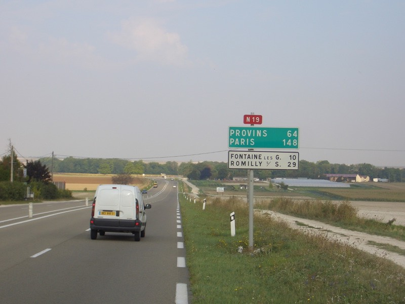
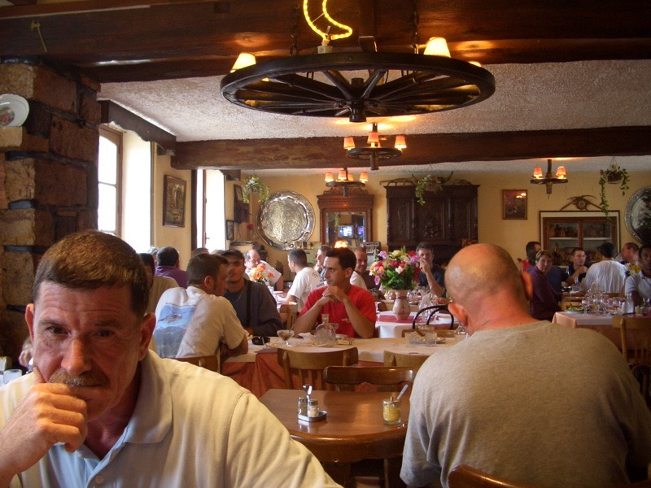

由於昨晚睡的太熟，完全忘了受傷這回事，睡覺的姿勢千奇百怪，睡醒之後身上自然沾滿了各式血痕。
聽起來有點噁心，但這是事實，沒有包紮就睡覺，沒辦法的呀 /_\
九點半離開旅館，到隔壁早餐店買三明治吃。大大的招牌看起來好像是特價的很便宜似的。
其實要價將近四歐元，150塊一個的三明治，一點也不便宜，幸虧挺好吃的∼
除了三明治，還買了一個看起來很厚實，像是魔仗造型的麵包，1.12歐元。
味道的確是不錯，但裡頭空空盪盪的，全部都是空氣，跟外表相當不符合，商業詐欺麵包。
那麼是要去搭火車回巴黎呢？還是自己騎回去？趁著答案還沒有出現的時候，趕緊騎車上路。
把地圖丟掉吧，走你想走的路、去你想去的地方、實現你最初的夢想。
現在只要看著巴黎的牌子，一路騎回去就對了，繞了一圈，總算要回來了。
但心境跟環島即將結束的心境差很多，環島完是騎回家，環法完，還是在異鄉。
走在N19公路，看著逼近150公里的指示牌，相當具有挑戰性，最後的一段路了，騎完他吧！

異鄉是法國，但法國的巴黎，其實有個相當溫馨的地方，跟家一樣。
只要騎回去了，就能好好的休息，再也不用瞪大眼睛找著HOTEL的旅館，睡在陌生的房間，躺在寂寞的床。
最後一天的天氣，出發的時候蠻涼爽的，很適合騎車。老天爺也同情我，給我個優待嗎？
不，中午十二點剛過，涼爽的天氣馬上變臉下起了小雨。
就平常來講，這種小不拉機的毛毛雨，根本就沒當一回事，淋一整天也不痛不癢。
只是現在情況不一樣，身上帶著傷口不適合碰到水，更何況是淋雨騎車。
穿著雨衣雨褲的話狀況也不會好到哪裡去，因為雨褲會和腳的傷口摩擦，只怕會更糟糕。
苦惱再苦惱，背後那個核能發電廠，搞不好下的雨水還是帶有放射線的。
躲在大樹下，第一次，什麼事也不做，就等雨自己停。
依璇引用長假中木村拓哉的話『不順的時候，努力也沒用的時候，就不要努力了，當作是天給你的假期吧。』
所以我就在樹下開始做奇奇怪怪的動作，還好沒有激怒老天爺，變成大雷雨。
過了一陣子，感覺雨變得有點小，把背包裡的開水喝了三大口，然後全部倒掉，真的太重了。
趁沒什麼雨趕快騎，路旁的指示牌說前面兩公里有餐廳呀，可以去那邊躲雨吃午餐。
下午一點半左右到餐廳，完全爆滿的狀況下，只有一個女服務生在忙進忙出。
很難得看到悠閒的法國人會這麼樣的忙碌，走路用跑的，講話用吼的。
對著酒吧說：『來兩杯他媽的咖啡。』
對著廚房說：『煮兩盤你老師的今日特餐！快一點，半生不熟沒關係，客人在等了！』
對著客人（也就是我）說：『一位嗎？請這邊坐。』

手腳俐落的鋪上餐巾紙，搜刮旁邊兩桌沒吃完的法國麵包倒在同一籃就端給了我。
拿刀叉過來的時候，相當明顯的聽到餐具掉到地下的聲音，我相當認命的自己去撿起來換新的。
又對著酒吧喊：『兩杯王八蛋的咖啡是煮好了沒呀？客人喝了就可以結帳閃人了。』
然後問我：『請問您要點什麼呢？』
經過多日的歷練，龍飛鳳舞的菜單稍微看得懂2成內容，總算能很自傲的自己點了菜。
比出右手食指：『我要吃.........嗯..........跟隔壁那個人一樣的東西。』
先來一小壺粉紅色的玫瑰紅葡萄酒
然後服務生一口氣端著五個盤子過來，兩隻手忙的沒有空的她，叫我自己拿一盤最上面的起來。
很普通的生菜沙拉，加了洋蔥，口感挺清脆的，其實法國人會把菜從鐵盤子移到瓷盤上面吃。
但這樣吃東西多麻煩，而且沒事還要多洗一個盤子，所以就直接在鐵盤上吃了起來。
這麼不巧，隔壁那個人吃的是牛排，可是這家店的牛排煎的還不錯，配上那鐵盤子，很有台灣夜市的風味。
每吃完一盤，就順手把盤子往堆放髒餐盤的地方放（累積到一定數量，內場的人會收去洗）。
女服務生一面跑來跑去招呼客人，一面收盤子，注意到我的盤子會自動消失時，那暴躁的臉上出現了笑容。
甜點吃椰奶慕絲巧克力醬，這個挺不錯的，感覺也很好做，學起來回台灣沒事也能做來吃。
結帳時，為了讓服務生笑的再燦爛一點，只多給了1.2歐元的小費，她就好像中樂透一樣的說謝謝。
真的不客氣，妳也讓我見識到了原來法國人也是有這麼忙碌的。
吃完飯，雨也停了，但天氣還是陰陰的，白天都沒看到太陽的機會。
騎到下午兩點，距離巴黎還有85公里，呼呼∼只希望這是實際距離，那頂多騎160公里就可以到了。
跟著巴黎的牌子走，不是那麼容易的事情，騎著騎著就通通變成各種莫名奇妙的路標。
聽說大巴黎直徑有130公里，從進入大巴黎的暴風範圍開始。就進入瘋狂的迷路狀態。
集50天旅行的大成，地圖無用論再度登場，地名都是找不到的地方，想用太陽辨認方位也沒辦法。
憑著第六感亂騎，只是讓下場更加的淒慘，繞了一小時，居然回到剛剛來過的地方，繼續面對陌生的地名。
想不到回程居然是如此的坎坷，進入了大巴黎，卻回不了巴黎，與其說是無奈，不如說是不爽到了極點。
反正沒人聽的懂中文，就這樣邊騎邊碎碎念一些有的沒的『媽的什麼鬼地方叫做OOO，聽都沒聽過！』
心情相當惡劣，本來想愉快的回到巴黎，結果卻回不了巴黎，怒呀 ~"~
迷路的狀況大概從下午五點一直持續到八點，因為身處於大巴黎，其實街道的景色看起來跟巴黎是差不多的。
但差不多畢竟還是不一樣，等重新看到巴黎的牌子時，已經從巴黎的右邊騎到巴黎的南邊。
距離還有29公里（這時已經騎了將近150公里了唷）。
覺得自己開始變成中午的服務生，招他媽的一輛計程車或是搭你老師的火車進城吧！老子不想騎了。
講是這樣講，招不到計程車，也不會搭火車，所以還是乖乖的騎回巴黎。
跨過塞納河進入巴黎的瞬間，是晚上八點二十五分，總算，天殺的，他奶奶的，老子騎完了 >"<
今天創下了，單日最遠騎乘距離、單日最長騎乘時間、單日攝影最少張照片、單日脫口而出髒話最多記錄。
回到健康監獄將近九點，可以好好休息個幾天，不用想明天睡醒要騎去哪裡，天黑要在哪過夜。
雖然這趟旅行沒發生什麼驚天動地的事情，五十天感覺一眨眼就過去了，到現在還是不敢相信自己到了法國騎車。
法語也一點都沒進步，本來還以為環法完之後，可以很溜的說法語，真是太理想主意了。
可憐的腳踏車，不論我是住大旅館還是睡街頭，它始終都是睡在倉庫或是牆角，真的很過意不去。
這麼辛苦的旅行，FCR1下次你還願意再跟我來嗎？
如果願意的話，下次我們就去環亞吧，一口氣騎它個三萬公里∼